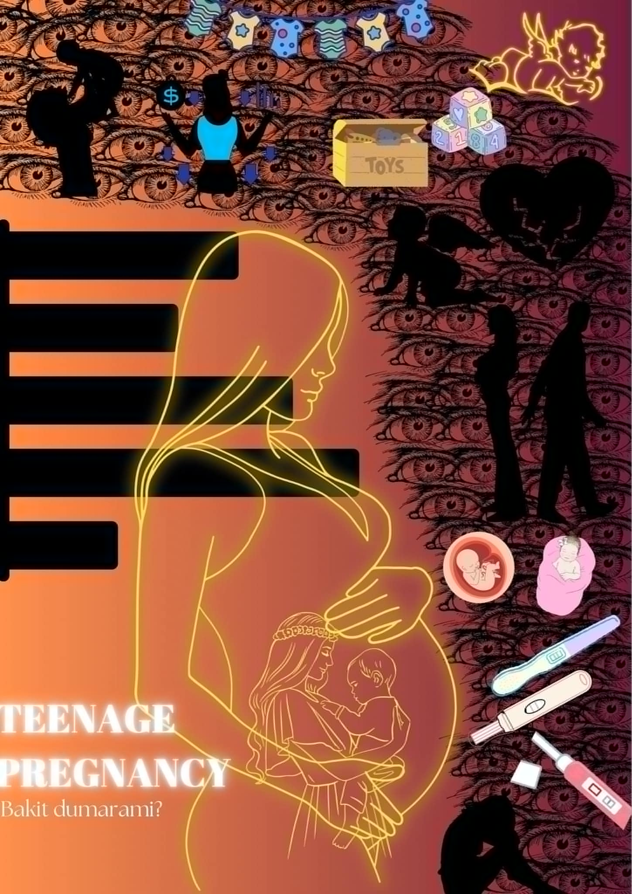

- 
Ang napili naming documentary ay tungkol sa maagang pagbubuntis o teenage pregnancy. Tinalakay dito kung gaano karami ang nadadagdag na kabataang nagbubuntis taun-taon. Patuloy na tumataas ang bilang ng mga batang ina sa Pilipinas, at ito ay isang seryosong isyu na nakakaapekto sa ating populasyon. Nakababahala ang pagdami ng mga teenage mothers, at isang posibleng sanhi nito ay ang kakulangan sa tamang kaalaman tungkol sa sex education. Marami sa mga kabataan at pati na rin sa mga matatanda ay walang sapat na impormasyon tungkol dito, kaya’t hindi nila alam kung tama o mali ang kanilang mga desisyon. Ayon sa isang survey na isinagawa ng gobyerno, marami sa mga magulang, kahit na sila mismo ay nakaranas na ng ganitong sitwasyon, ay hindi alam kung paano ito ipaliwanag sa kanilang mga anak, dahil sa pananaw ng ilang Pilipino na ang usaping ito ay “bastos.” Gayunpaman, tutol ang Simbahang Katolika sa pagpapalaganap ng sex education sa mga paaralan. Ayon sa kanila, ang mga magulang ang dapat magturo nito sa kanilang mga anak. Kaya’t ang tanong, paano nga ba natin sosolusyunan ang isyung ito kung walang sapat na pagtutulungan?
Bilang isang grupo ng mag-aaral, nauunawaan namin kung gaano kadali masira ang kinabukasan ng batang magulang. Isang pagkakamali na maaaring magtaglay ng pasakit habang buhay. Tutol ang Simbahang Katolika sa Sex Education sa mga paaralan, at sinasabi nilang hindi nila karapatan pakialaman ang mga polisiya ng gobyerno. Dahil dito, hindi natutugunan ang pangangailangan ng mga kabataan na magkaroon ng tamang kaalaman. Ayon sa simbahan, kulang ang kaalaman ng mga kabataang nakikipagtalik, ngunit naniniwala silang ang mga magulang ang dapat magturo sa kanilang mga anak. May mga batas din ang simbahan patungkol sa mga nabubuntis na hindi pa kasal. Dapat nating ituro sa kabataan ang parehong batas ng simbahan at pamahalaan upang mas maunawaan nila ang mga tamang desisyon. Hindi masama ang pag-aralan ang mga ito. Sa mga magulang, maging mapanuri tayo sa ating mga anak. Batas ng Pamahalaan nga ba ang nararapat nating sunduin? Ngunit may isang bagay akong sinisigurado sainyo, sa pag lubog ng mga araw, sa Diyos at sa Simbahan tayo mananalig.